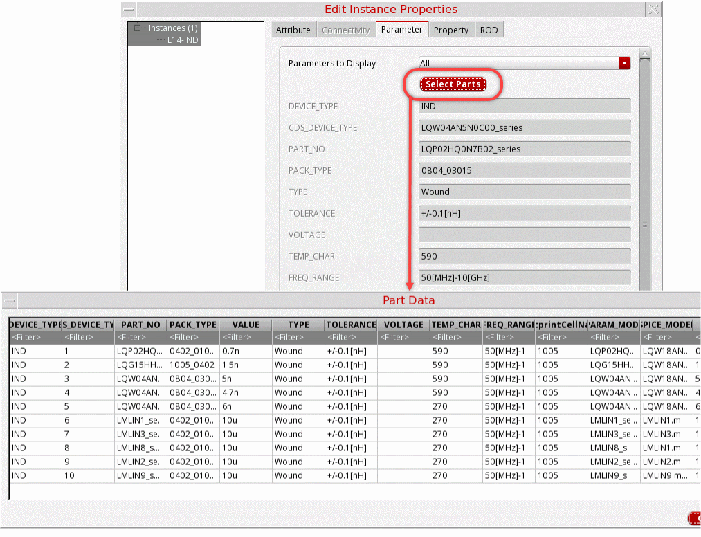

Instantiating SMD Instances
To ensure that the top-level package design is derived from a package technology, create a package schematic inside a library where the technology library has the package, module, or board fabric. For example, a library created by importing a design from Allegro.
SMD components are found in the smdLib, a library created by importing SMD components from a CSV file. It is designed to be used in conjunction with a part table file (*.ptf) that lists the available components and their associated electrical characteristics and other useful information provided by the component manufacturer. The Select Parts button in the Edit Object Properties form displays the most useful electrical information of each individual SMD footprints. For example, for an inductor, it displays the inductance, Q or quality factor, self-resonance frequency, and tolerance. In addition, an associated S-parameter model file to be used for simulation is mentioned. Models are obtained from the manufacturer and their names are stored in the PTF.
- Open the Edit Object Properties form for an SMD instance.
-
Click Select Parts in the Edit Object Properties form.
The Part Data dialog box appears. It displays the information from the Physical Part Table file (.ptffile). Each row in the Part Data dialog box corresponds to a physical component variant associated with the logical part you have selected in the schematic. - Apply filters to select the part variant.
- Click OK. The instance can be added to the schematic.
Related Topics
Return to top